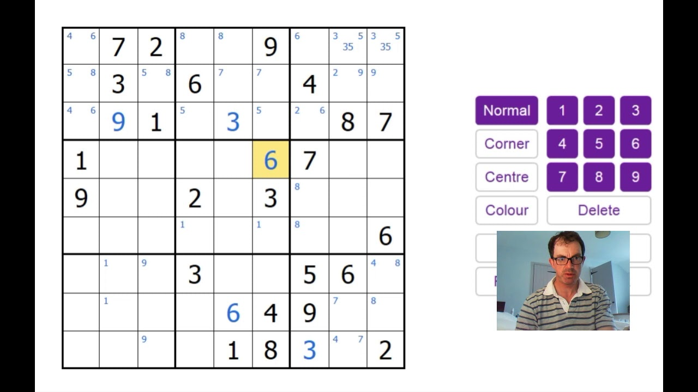
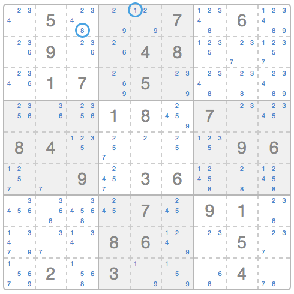
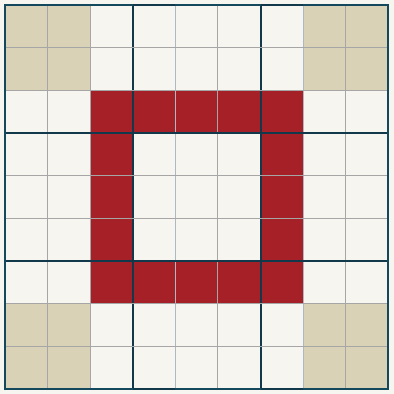
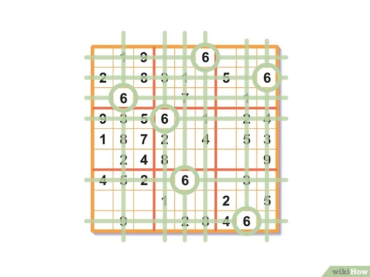
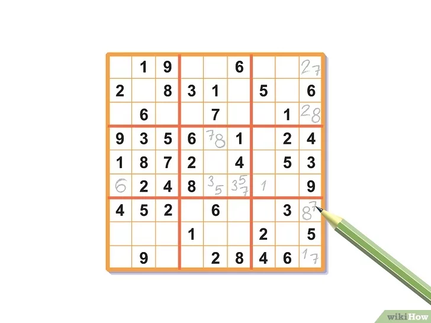
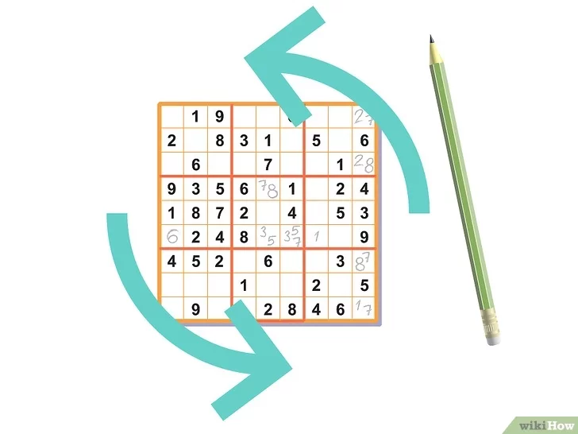

Avançado:
Criar pontos referência, ou seja, menos campos preenchidos, porém é importante criar mesmo que já tenha.
Croqui mapeavel.
Anotação interna e externa entre quadros como por exemplo:
| 1,3,5 |
1,4,5 |
1,5,8 |
| 2,7,8 |
2,5,8 |
3,58 |
| 1,5,9 |
2,5,8 |
3,58 |
1,2,3,5,7


Verificação de linhas, colunas, diagonais, retângulo exclusivo(são números iguais sem um grupo específico de quadrantes podendo ser de diferentes regiões), cruzamentos...
Ponto referência imaginário, podendo considerar matrizes ou vetores diferentes.
Estatística:
(1-9=45)=3x3(matriz/vetor)
45/3=15
45/9=5
Incluir diagonal, exemplo:
70% de chance de ser diagonal.
Jogada copiada, exemplo:
Número sozinho oculto
Muitas vezes, ao se olhar atentamente, você pode encontrar um "número sozinho oculto". Esse número não aparece sozinho nas marcações. Ele é o único candidato possível numa linha, coluna ou grade 3x3, só que ele aparece no meio de outros números. Confira na imagem ao lado:
Nessa imagem é possível ver que os números 1 e 8 aparecem apenas uma vez nas suas respectivas grades 3x3. Isso indica que eles devem ser colocados necessariamente naquelas posições.

Números escondidos:
Essa técnica, também conhecida como Pares Sozinhos, é um pouco mais avançada. Ele exige que você marque os possíveis números que podem ocupar cada uma das posições de uma coluna, uma linha ou subgrupo 3x3.
Caso apareça duas posições que apresentem exatamente duas possibilidades e elas sejam iguais (exemplo: numa linha qualquer, o primeiro e o quarto quadrado tem como possibilidades apenas os números 3 e 7), isso permite que esses dois números sejam removidos das possibilidades do “grupo” analisado (linha, coluna ou subgrupo).
A situação de cima também vale para três posições que apresentem exatamente três possibilidades iguais.
Variações e Formatos Diferentes:
O Sudoku tradicional é conhecido e amado por milhões. Entretanto, esta versão clássica é apenas uma das muitas variações que existem. Há uma infinidade de variações que apresentam diferentes formatos e regras, permitindo que entusiastas de quebra-cabeças encontrem novos desafios e maneiras de desfrutar do jogo.
Uma das variações mais populares é o Sudoku 16x16. Este tipo de Sudoku segue as mesmas regras básicas do Sudoku 9x9, mas em uma grade maior e com os números (1 a 9) e letras (A a G). Com a adição de mais linhas, colunas e regiões, o nível de complexidade aumenta, tornando-se um desafio ainda maior para os amantes de Sudoku.
Outra variante interessante é o Sudoku Diagonal. Além das regras tradicionais, este jogo adiciona mais um requisito: cada uma das duas diagonais principais da grade também deve conter todos os números de 1 a 9. Isso adiciona uma camada extra de complexidade e faz com que o jogador tenha que pensar ainda mais estrategicamente.
Existem ainda variações mais complexas, como o Samurai Sudoku, que envolve cinco grades de Sudoku sobrepostas, ou o Sudoku Irregular (também conhecido como Jigsaw Sudoku), onde as subgrades 3x3 tradicionais são substituídas por regiões de formas irregulares.
As variações do Sudoku permitem aos jogadores desfrutar de novos desafios e manter o jogo sempre interessante. Não importa se você é um iniciante ou um mestre de Sudoku, sempre há um novo formato esperando para testar suas habilidades de resolução de problemas.
Teorema de Phistomefel:



Analise uma fileira de três quadrados grandes. Outra opção é analisar os quadrados grandes da mesma forma que se analisam linhas ou colunas. Escolha um número qualquer e veja se consegue descobrir a localização dele nos três quadrados. A título de exemplo, pense no número 6. Veja quais linhas e colunas, dentro desses três quadrados grandes, já contam com ele. Baseie-se nessas informações para deduzir a localização dos números 6 restantes.

Escreva os números à lápis. Quanto maior a dificuldade, menos essas técnicas o ajudarão a resolver o quebra-cabeças. Nesse caso, será preciso anotar os candidatos possíveis a cada quadradinho. Sempre que houver uma grande possibilidade de um número pertencer a um determinado espaço, anote-o no canto deste. Você pode anotar três ou quatro números no mesmo quadrado à medida que avança na solução do quebra-cabeça. Conforme você resolve o sudoku, elimine todas as possibilidades para cada quadradinho até chegar apenas uma, que você poderá anotar permanentemente.

Faça verificações frequentes. Conforme os espaços são preenchidos, analise de novo a tabela para descobrir os números remanescentes. Sempre que você descobre a posição de um novo número, passa a ter mais informações para trabalhar, facilitando a resolução do quebra-cabeça.
Submeta a tabela às técnicas acima várias vezes para preencher mais espaços.
NP-Completude do Sudoku:
O Sudoku generalizado é um problema de otimização NP-completo, o que significa que, em princípio, não existe um algoritmo que possa resolver o problema de forma eficiente para todos os possíveis casos (MAJI & PAL, 2014).
NP
A utilização da probabilidadese baseia em que o número severino de outro como por exemplo:
A-C-A
A-A-C
C-A-A
C-A-C
C-C-A
A porcentagem entre quadros, e quando feita uma análise profunda com a utilização de várias técnicas citadas acimasim imagina quantos por cento existe de possibilidade em cada quadrante.